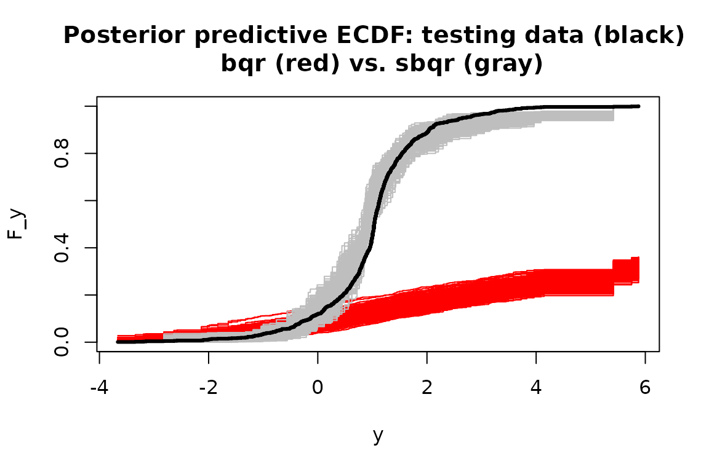
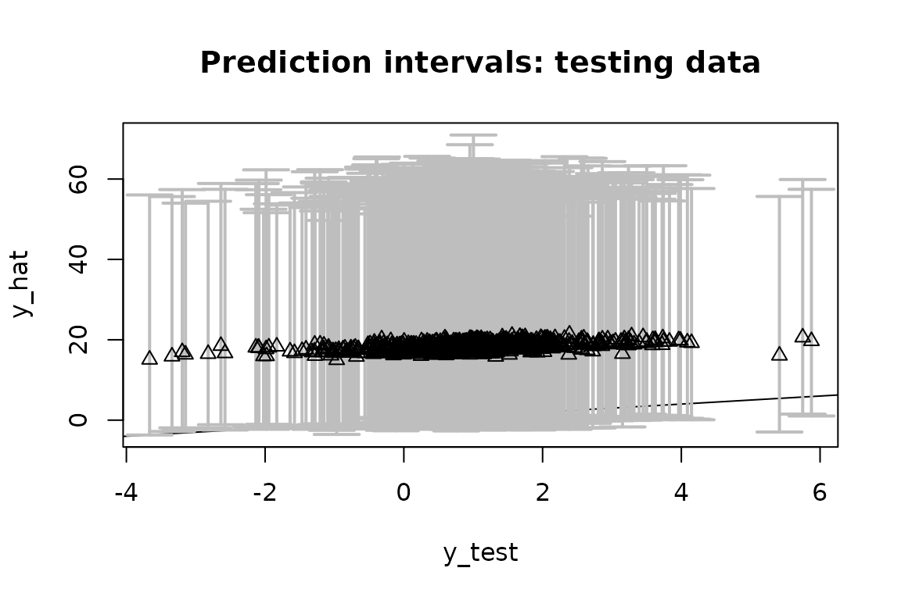
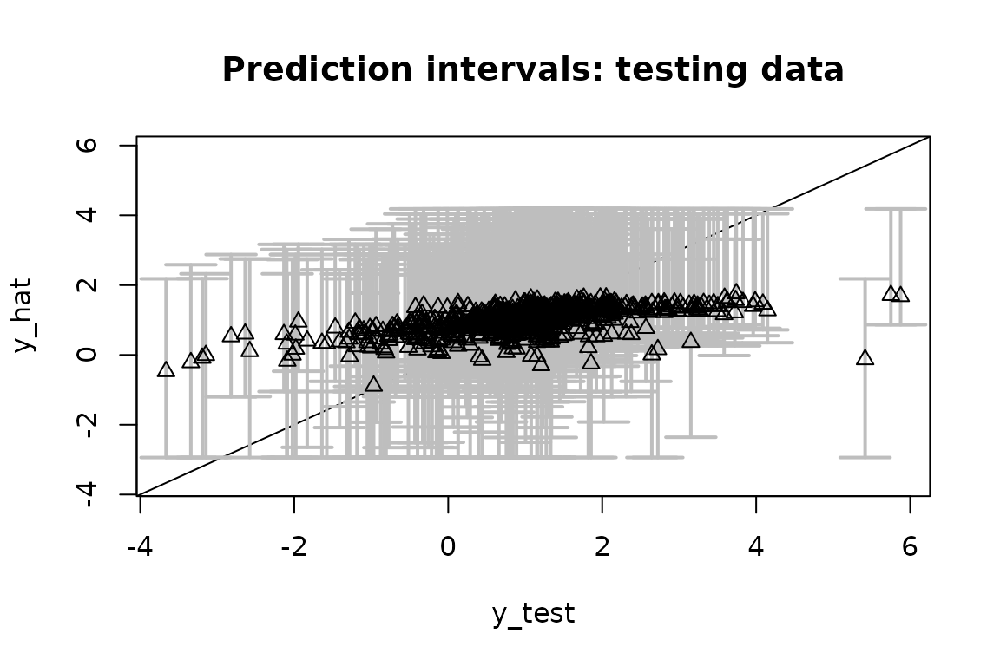

Background: semiparametric regression via data transformations
Data transformations are a useful companion for parametric regression models. A well-chosen or learned transformation can greatly enhance the applicability of a given model, especially for data with irregular marginal features (e.g., multimodality, skewness) or various data domains (e.g., real-valued, positive, or compactly-supported data).
We are interested in providing fully Bayesian inference for semiparametric regression models that incorporate (1) an unknown data transformation and (2) a useful parametric regression model. For paired data with and , consider the following class of models: Here, is a (monotone increasing) data transformation to be learned, is an unknown regression function parametrized by , and are independent errors. Location and scale restrictions (e.g., and ) are usually applied for identifiability.
Examples. We focus on the following important special cases:
The linear model is a natural starting point: The transformation broadens the applicability of this useful class of models, including for positive or compactly-supported data (see below).
The quantile regression model replaces the Gaussian assumption in the linear model with an asymmetric Laplace distribution (ALD) to target the th quantile of at , or equivalently, the th quantile of at . The ALD is quite often a very poor model for real data, especially when is near zero or one. The transformation offers a pathway to significantly improve the model adequacy, while still targeting the desired quantile of the data.
The Gaussian process (GP) model generalizes the linear model to include a nonparametric regression function, where is a GP and parameterizes the mean and covariance functions. Although GPs offer substantial flexibility for the regression function , the default approach (without a transformation) may be inadequate when has irregular marginal features or a restricted domain (e.g., positive or compact).
Challenges: The goal is to provide fully Bayesian posterior inference for the unknowns and posterior predictive inference for future/unobserved data . We prefer a model and algorithm that offer both (i) flexible modeling of and (ii) efficient posterior and predictive computations.
Innovations: Our approach (https://doi.org/10.1080/01621459.2024.2395586) specifies a nonparametric model for , yet also provides Monte Carlo (not MCMC) sampling for the posterior and predictive distributions. As a result, we control the approximation accuracy via the number of simulations, but do not require the lengthy runs, burn-in periods, convergence diagnostics, or inefficiency factors that accompany MCMC. The Monte Carlo sampling is typically quite fast.
Using SeBR
The R package SeBR is installed and loaded
as follows:
The main functions in SeBR are:
sblm(): Monte Carlo sampling for posterior and predictive inference with the semiparametric Bayesian linear model;sbsm(): Monte Carlo sampling for posterior and predictive inference with the semiparametric Bayesian spline model, which replaces the linear model with a spline for nonlinear modeling of ;sbqr(): blocked Gibbs sampling for posterior and predictive inference with the semiparametric Bayesian quantile regression; andsbgp(): Monte Carlo sampling for predictive inference with the semiparametric Bayesian Gaussian process model.
Each function returns a point estimate of
(coefficients), point predictions at some specified testing
points (fitted.values), posterior samples of the
transformation
(post_g), and posterior predictive samples of
at the testing points (post_ypred), as well as other
function-specific quantities (e.g., posterior draws of
,
post_theta). The calls coef() and
fitted() extract the point estimates and point predictions,
respectively.
Note: The package also includes Box-Cox variants of
these functions, i.e., restricting
to the (signed) Box-Cox parametric family
with known or unknown
.
The parametric transformation is less flexible, especially for irregular
marginals or restricted domains, and requires MCMC sampling. These
functions (e.g., blm_bc(), etc.) are primarily for
benchmarking.
Semiparametric Bayesian linear models with sblm
We simulate data from a transformed linear model:
set.seed(123) # for reproducibility
# Simulate data from a transformed linear model:
dat = simulate_tlm(n = 200, # number of observations
p = 10, # number of covariates
g_type = 'step' # type of transformation (here, positive data)
)
# Training data:
y = dat$y; X = dat$X
# Testing data:
y_test = dat$y_test; X_test = dat$X_test sblm() quickly produces Monte Carlo samples of
under the semiparametric Bayesian linear model:
# Fit the semiparametric Bayesian linear model:
fit = sblm(y = y,
X = X,
X_test = X_test)
#> [1] "8 seconds remaining"
#> [1] "5 seconds remaining"
#> [1] "3 seconds remaining"
#> [1] "Total time: 8 seconds"
names(fit) # what is returned
#> [1] "coefficients" "fitted.values" "post_theta" "post_ypred"
#> [5] "post_g" "model" "y" "X"
#> [9] "X_test" "psi" "approx_g" "sigma_epsilon"These are Monte Carlo (not MCMC) samples, so we do not need to perform any MCMC diagnostics (e.g., verify convergence, inspect autocorrelations, discard a burn-in, re-run multiple chains, etc.).
First, we check for model adequacy using posterior predictive
diagnostics. Specifically, we compute the empirical CDF on both
y_test (black) and on each simulated testing predictive
dataset from post_ypred (gray):
Despite the challenging features of this marginal distribution, the proposed model appears to be adequate. Although the gray lines are not clearly visible at zero or one, the posterior predictive distribution does indeed match the support of the observed data.
Remark: Posterior predictive diagnostics do not
require training/testing splits and are typically performed in-sample.
If X_test is left unspecified in sblm, then
the posterior predictive draws are given at X and can be
compared to y. The example above uses out-of-sample checks,
which are more rigorous but less common.
Next, we evaluate the predictive ability on the testing dataset by
computing and plotting the out-of-sample prediction intervals at
X_test and comparing them to y_test. There is
a built-in function for this:
# Evaluate posterior predictive means and intervals on the testing data:
plot_pptest(fit$post_ypred,
y_test,
alpha_level = 0.10) # coverage should be >= 90% #> [1] 0.93The out-of-sample predictive distributions are well-calibrated.
Finally, we summarize the posterior inference for the transformation and the regression coefficients and compare to the ground truth values. First, we plot the posterior draws of (gray), the posterior mean of (black), and the true transformation (triangles):
The posterior distribution of accurately matches the true transformation.
Next, we compute point and interval summaries for and compare them to the ground truth:
# Summarize the parameters (regression coefficients):
# Posterior means:
coef(fit)
#> [1] 0.07314744 0.47686070 0.44598444 0.48627809 0.34035855 0.39385554
#> [7] 0.08038143 0.12864699 -0.04873447 -0.08244957 0.08042865
# Check: correlation with true coefficients
cor(dat$beta_true[-1],
coef(fit)[-1]) # excluding the intercept
#> [1] 0.9435131
# 95% credible intervals:
theta_ci = t(apply(fit$post_theta, 2, quantile, c(.025, 0.975)))
# Check: agreement on nonzero coefficients?
which(theta_ci[,1] >= 0 | theta_ci[,2] <=0) # 95% CI excludes zero
#> [1] 2 3 4 5 6
which(dat$beta_true != 0) # truly nonzero
#> [1] 2 3 4 5 6The point estimates of closely track the ground truth, and inference based on the 95% credible intervals correctly selects the truly nonzero regression coefficients.
Remark: The location-scale of the data-generating process and the model may not match exactly. Thus, we use correlations to compare the regression coefficients (while omitting the intercept) and apply location-scale shifts of the transformations to ensure comparability. This is only a byproduct of the simulated data setting and does not matter for real data analysis (or for variable selection).
Note: Try repeating this exercise with
blm_bc() in place of sblm(). The Box-Cox
transformation cannot recover the transformation
or the coefficients
accurately, the model diagnostics are alarming, and the predictions
deteriorate substantially.
Semiparametric Bayesian quantile regression with
sbqr
We now consider Bayesian quantile regression, which specifies a linear model with ALD errors. First, we simulate data from a heteroskedastic linear model. Heteroskedasticity often produces conclusions that differ from traditional mean regression. Here, we do not include a transformation, so the data-generating process does not implicitly favor our approach over traditional Bayesian quantile regression (i.e., with the identity).
# Simulate data from a heteroskedastic linear model (no transformation):
dat = simulate_tlm(n = 200, # number of observations
p = 10, # number of covariates
g_type = 'box-cox', lambda = 1, # no transformation
heterosked = TRUE # heteroskedastic errors
)
# Training data:
y = dat$y; X = dat$X
# Testing data:
y_test = dat$y_test; X_test = dat$X_test Next, we load in two packages that we’ll need:
Now, we fit two Bayesian quantile regression models: the traditional
version without a transformation (bqr()) and the proposed
alternative (sbqr()). We target the
quantile.
# Quantile to target:
tau = 0.05
# (Traditional) Bayesian quantile regression:
fit_bqr = bqr(y = y,
X = X,
tau = tau,
X_test = X_test,
verbose = FALSE # omit printout
)
# Semiparametric Bayesian quantile regression:
fit = sbqr(y = y,
X = X,
tau = tau,
X_test = X_test,
verbose = FALSE # omit printout
)
names(fit) # what is returned
#> [1] "coefficients" "fitted.values" "post_theta" "post_ypred"
#> [5] "post_qtau" "post_g" "model" "y"
#> [9] "X" "X_test" "psi" "approx_g"
#> [13] "tau"For both model fits, we evaluate the same posterior predictive
diagnostics as before. Specifically, we compute the empirical CDF on
both y_test (black) and on each simulated testing
predictive dataset from post_ypred for sbqr
(gray) and bqr (red):

Without the transformation, the Bayesian quantile regression model is not a good model for the data. The learned transformation completely resolves this model inadequacy—even though there was no transformation present in the data-generating process.
Finally, we can asses the quantile estimates on the testing data.
First, consider bqr:
# Quantile point estimates:
q_hat_bqr = fitted(fit_bqr)
# Empirical quantiles on testing data:
(emp_quant_bqr = mean(q_hat_bqr >= y_test))
#> [1] 0.026
# Evaluate posterior predictive means and intervals on the testing data:
(emp_cov_bqr = plot_pptest(fit_bqr$post_ypred,
y_test,
alpha_level = 0.10))
#> [1] 0.98Recall that these are quantile regression models at
,
so we expect them to be asymmetric about y_test.
The out-of-sample empirical quantile is 0.026 (the target is ) and the 90% prediction interval coverage is 0.98.
Repeat this evaluation for sbqr:
# Quantile point estimates:
q_hat = fitted(fit)
# Empirical quantiles on testing data:
(emp_quant_sbqr = mean(q_hat >= y_test))
#> [1] 0.034
# Evaluate posterior predictive means and intervals on the testing data:
(emp_cov_sbqr = plot_pptest(fit$post_ypred,
y_test,
alpha_level = 0.10))
#> [1] 0.97Now the out-of-sample empirical quantile is 0.034 and the 90%
prediction interval coverage is 0.97. sbqr is better
calibrated to
,
while both methods are slightly overconservative in the prediction
interval coverage. However, sbqr produce significantly
smaller prediction intervals while maintaining this conservative
coverage, and thus provides more powerful and precise inference.
Remark: point and interval estimates for the
quantile regression coefficients
may be computed exactly as in the sblm() example.
Note: try this again for other quantiles, such as . As approaches 0.5 (i.e., median regression), the problem becomes easier and the models are better calibrated.
Semiparametric Bayesian Gaussian processes with
sbgp
Consider a challenging scenario with (i) a nonlinear regression function of and (ii) Beta marginals, so the support is . Simulate data accordingly:
# Training data:
n = 200 # sample size
x = seq(0, 1, length = n) # observation points
# Testing data:
n_test = 1000
x_test = seq(0, 1, length = n_test)
# True inverse transformation:
g_inv_true = function(z)
qbeta(pnorm(z),
shape1 = 0.5,
shape2 = 0.1) # approx Beta(0.5, 0.1) marginals
# Training observations:
y = g_inv_true(
sin(2*pi*x) + sin(4*pi*x) + .25*rnorm(n)
)
# Testing observations:
y_test = g_inv_true(
sin(2*pi*x_test) + sin(4*pi*x_test) + .25*rnorm(n)
)
plot(x_test, y_test,
xlab = 'x', ylab = 'y',
main = "Training (gray) and testing (black) data")
lines(x, y, type='p', col='gray', pch = 2)To highlight the challenges here, we first consider a Box-Cox-transformed GP. For this as well as the proposed model, we require a package:
Now we fit the Box-Cox GP and evaluate the out-of-sample predictive performance:
# Fit the Box-Cox Gaussian process model:
fit_bc = bgp_bc(y = y,
locs = x,
locs_test = x_test)
#> [1] "Initial GP fit..."
#> [1] "Updated GP fit..."
# Fitted values on the testing data:
y_hat_bc = fitted(fit_bc)
# 90% prediction intervals on the testing data:
pi_y_bc = t(apply(fit_bc$post_ypred, 2, quantile, c(0.05, .95)))
# Average PI width:
(width_bc = mean(pi_y_bc[,2] - pi_y_bc[,1]))
#> [1] 0.2668766
# Empirical PI coverage:
(emp_cov_bc = mean((pi_y_bc[,1] <= y_test)*(pi_y_bc[,2] >= y_test)))
#> [1] 0.894
# Plot these together with the actual testing points:
plot(x_test, y_test, type='n',
ylim = range(pi_y_bc, y_test), xlab = 'x', ylab = 'y',
main = paste('Fitted values and prediction intervals: \n Box-Cox Gaussian process'))
# Add the intervals:
polygon(c(x_test, rev(x_test)),
c(pi_y_bc[,2], rev(pi_y_bc[,1])),
col='gray', border=NA)
lines(x_test, y_test, type='p') # actual values
lines(x_test, y_hat_bc, lwd = 3) # fitted valuesThe Box-Cox transformation adds some flexibility to the GP, but is insufficient for these data. The prediction intervals are unnecessarily wide and do not respect the support , while the estimated mean function does not fully capture the trend in the data.
Now fit the semiparametric Bayesian GP model:
# library(GpGp) # loaded above
# Fit the semiparametric Gaussian process model:
fit = sbgp(y = y,
locs = x,
locs_test = x_test)
#> [1] "Initial GP fit..."
#> [1] "Updated GP fit..."
#> [1] "Sampling..."
#> [1] "Done!"
names(fit) # what is returned
#> [1] "coefficients" "fitted.values" "fit_gp" "post_ypred"
#> [5] "post_g" "model" "y" "X"
#> [9] "approx_g" "sigma_epsilon"
coef(fit) # estimated regression coefficients (here, just an intercept)
#> [1] 0.02256587Evaluate the out-of-sample predictive performance on the testing data:
# Fitted values on the testing data:
y_hat = fitted(fit)
# 90% prediction intervals on the testing data:
pi_y = t(apply(fit$post_ypred, 2, quantile, c(0.05, .95)))
# Average PI width:
(width = mean(pi_y[,2] - pi_y[,1]))
#> [1] 0.2130283
# Empirical PI coverage:
(emp_cov = mean((pi_y[,1] <= y_test)*(pi_y[,2] >= y_test)))
#> [1] 0.953
# Plot these together with the actual testing points:
plot(x_test, y_test, type='n',
ylim = range(pi_y, y_test), xlab = 'x', ylab = 'y',
main = paste('Fitted values and prediction intervals: \n semiparametric Gaussian process'))
# Add the intervals:
polygon(c(x_test, rev(x_test)),
c(pi_y[,2], rev(pi_y[,1])),
col='gray', border=NA)
lines(x_test, y_test, type='p') # actual values
lines(x_test, y_hat, lwd = 3) # fitted valuesUnlike the Box-Cox version, sbgp respects the support of
the data
,
captures the trend, and provides narrower intervals (average widths are
0.213 compared to 0.267) with better coverage (0.953 for
sbgp and 0.894 for Box-Cox).
Despite the significant complexities in the data, sbgp
performs quite well out-of-the-box:
the nonlinearity is modeled adequately;
the support of the data is enforced automatically;
the out-of-sample prediction intervals are sharp and calibrated; and
the computations are fast.
Note: sbgp also applies for
with
,
such as spatial or spatio-temporal data. Such cases may require more
careful consideration of the mean and covariance functions: the default
mean function is a linear regression with the intercept only, while the
default covariance function is an isotropic Matern function. However,
many other options are available (inherited from the GpGp
package).
References
Kowal, D. and Wu, B. (2024). Monte Carlo inference for semiparametric Bayesian regression. JASA. https://doi.org/10.1080/01621459.2024.2395586